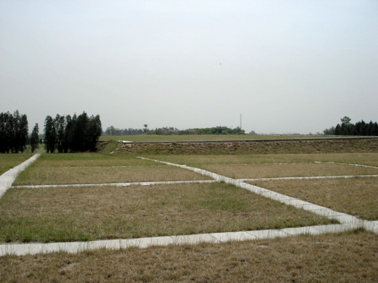

(conclusion)
| Tomb of Emperor Jingdi (conclusion) |
BACK TO DATE PAGE | |||||||
|  | ||||||||
| That's the relatively little area where we've been underground. And there is an entirely separate Empress's Tomb outside this complex but within sight of the Emperor's Tomb. | ||||||||
| BACK TO DATE PAGE | ||||||||